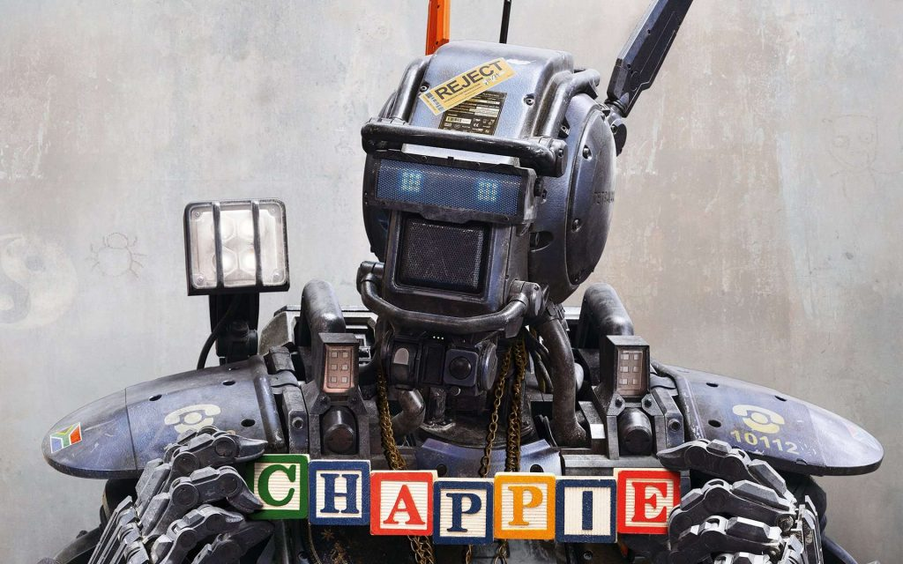

The film “Chappie”, directed by Neill Blomkamp，explores the boundaries of artificial intelligence, humanity, and ethics in the near future. As a student majoring in creative computing, this film has triggered my profound thoughts on AI design, ethical responsibilities, and the emotional potential of human – machine interaction.

Chappie, a sentient robot, subverts the traditional image of machines as merely logical entities. His childlike curiosity, vulnerability and emotional growth are at the core of the film’s narrative. This presentation style fits the concept of emotional design, emphasising that technology can evoke human resonance and emotional connection. For my personal project, this reminds me to focus on designing friendly AI systems and interactive technologies. By incorporating humanised characteristics such as learning ability, adaptability or emotional response, a more attractive and meaningful user experience can be created.
The film raises important questions about the ethical boundaries of AI development: Who should be held accountable for the actions of sentient machines? How should the rights and responsibilities of artificial life be defined? These questions echo the discussions in my courses regarding the social impact of technology. As a designer, I must consider the potential implications of my creations, whether it’s challenging social norms, exacerbating biases, or causing unforeseen consequences. This awareness is crucial for creating technologies that are not only innovative but also adhere to ethical principles.
Chappie’s growth is determined by his environment, influenced by both the forces of care and those of corruption. This reflects a broader principle: AI systems are neither inherently good nor evil but are shaped by the data, programming, and the environment in which they operate. This insight encourages me to pay attention to the datasets used to train AI systems and the ways of interaction, ensuring that they can promote inclusivity, fairness, and positive outcomes.
The emotional depth of Chappie stems from its ability to make the audience empathise with a robot. The film highlights the power of storytelling in humanising technology and prompting reflection on its social impact. This inspires me to incorporate narrative – driven elements into my creative computing projects. Whether through interactive installations or digital media, storytelling can bridge the gap between technology and users, fostering connection and deepening understanding.
Chappie is not only a film about robots; it is a profound exploration of humanity, technology, and morality. It inspires me to regard creative computing not just as technical work, but as a means of raising important questions and designing meaningful interactions.